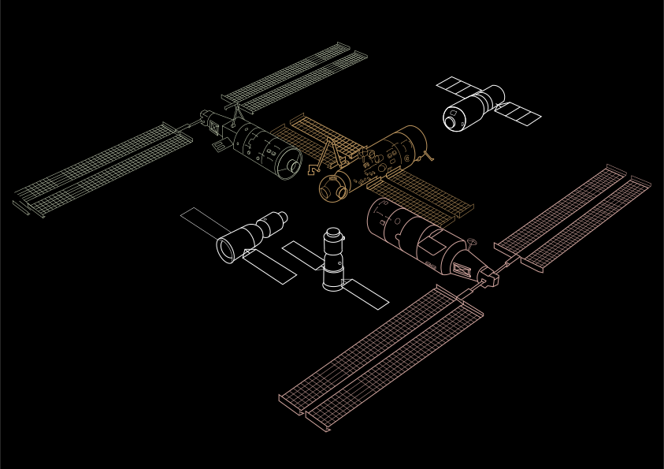

Estación Espacial Tiangong
La estación Tiangong se compone de 3 módulos, el módulo central Tianhe y los laboratorios Wentian y Mengtian, y podrá acoger 2 naves espaciales y una de carga con suministros.

El Programa es una iniciativa de la República Popular China para promover vuelos espaciales tripulados. El mayor éxito del programa fue colocar en órbita por primera vez a un ciudadano chino el 15 de octubre de 2003. Entre sus proyectos más ambiciosos está la construcción de la estación espacial Tiangong, traducido como “Palacio Celestial”, la que se planea estará aproximadamente 15 años orbitando a 400 km de la Tierra y que pesará en total unas 70 toneladas que es un cuarto del peso de la actual Estación Espacial Internacional (EEI), proyecto del que China fue excluido en 1998.
La estación Tiangong se compone de 3 módulos, el módulo central Tianhe y los laboratorios Wentian y Mengtian, y podrá acoger 2 naves espaciales y una de carga con suministros.
A diferencia de la ISS el espacio habitable del Palacio Celestial se concentra en un solo módulo, diseñado para albergar a 3 personas, el Tianhe que mide 16,6 metros de largo y 4,2 metros de diámetro. Su volumen es de 110 metros cúbicos, de los que 50 metros cúbicos están reservados completamente para la vida y el trabajo de los taikonautas. El volumen total de la EEI es de 916 metros cúbicos, mientras que la parte habitable es de 388 metros cúbicos, pudiendo albergar hasta siete personas.

Es importante señalar que paralelamente a la construcción de la Estación espacial China ha mandado misiones robóticas exploratorias, que en honor a la diosa de la luna se denominan Chang’e, siendo la chang’e 5 la que trajo un nuevo mineral denominado changesita en honor a la misma diosa.
La distancia entre la Tierra y la Luna es de 384.400 km, lo cual es bastante y al tener a Tiangong como un punto medio, sería un útil impulso a la minería lunar.
Ya China está pensando en lanzar un Chang’e 6, para incursionar de nuevo en la luna, está minería lunar permitirá a los científicos dilucidar la creación del satélite natural y su historia. lo cual tendría un avance mayor, si es que los hallazgos pueden ser analizados en el espacio antes de tener que reingresar a la tierra, acelerando su proceso de minería.